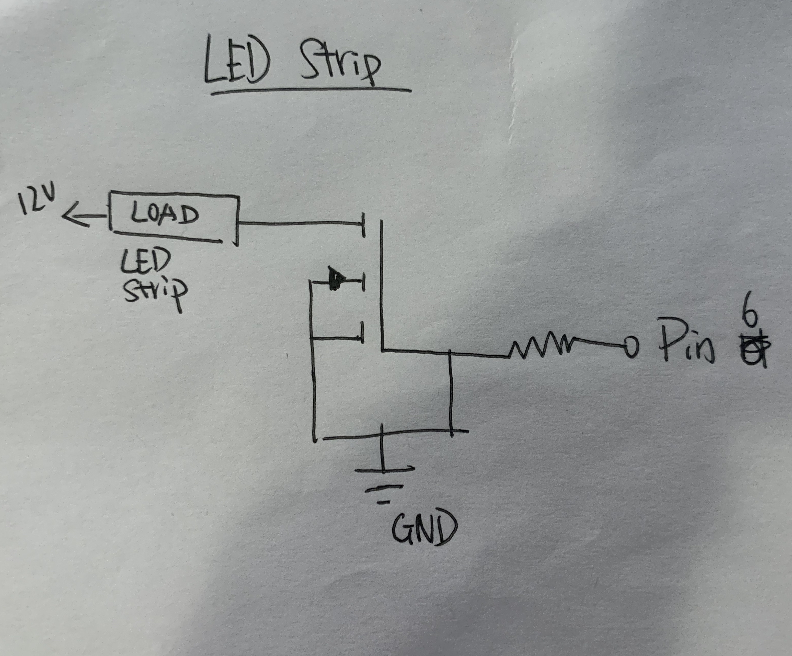
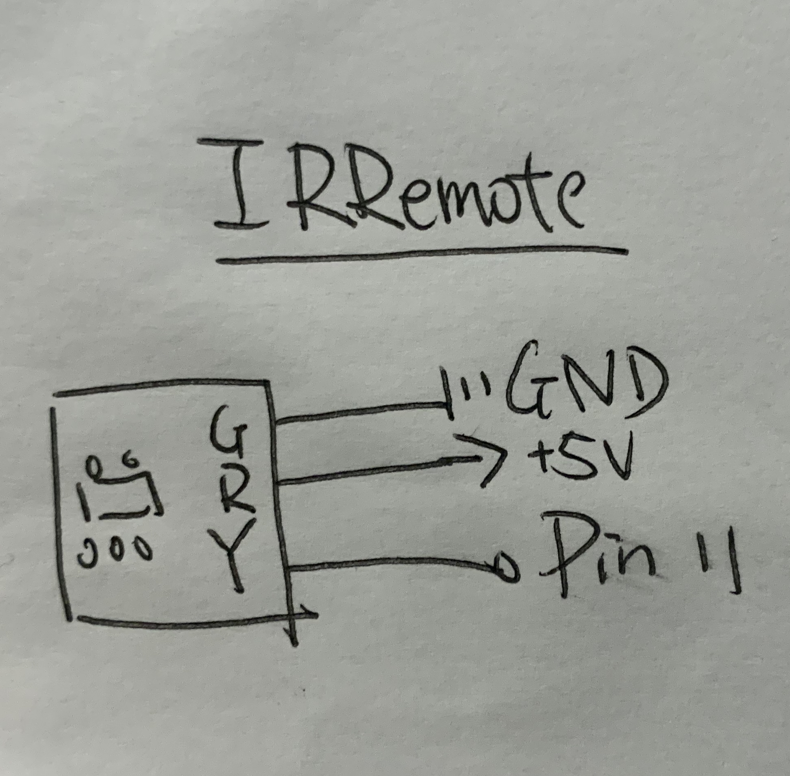

Final Project: Remote Control Table Lamp
Schematic
 
GND and +5V are connected to GND and 5V on the arduino. VR_x and VR_y are connected to A0 and A1 because the computer needs to analogRead() from arduino, which only Pins start with 'A' can be used with analogRead(). SW is connected to Pin 2.
Blue and Red LEDs are connected to Pin 5 and 6.
Circuit

The joystick consists of two potentiometers which controls its movement in both x- and y- axis.
Firmware
Circuit's operation

The y-axis controls the width of the circle. The x-axis controls the height of the circle. It scales based on my action.
The Blue LED only lights up when I pressed number keys, while the red LED lights up when I pressed other keys.